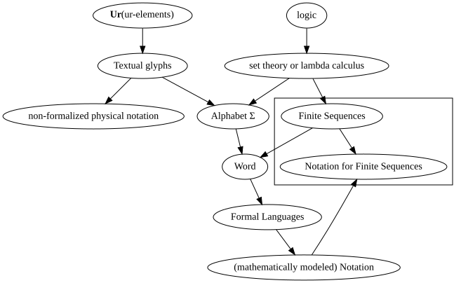

Our first formalization of logic and set theory, generally follows the instructions for Von Neumann-Bernays-Gödel set theory. That is, it is a mathematically platonist formalization. What would a formalization that took non-formalized physical notation as given -- the Wittgenstein approach -- look like?
We start by requiring that a successful formalization, have no testable difference between non-formalized physical notation, and mathematically modeled notation. That is, the Wittgenstein given is philosophically heavy. According to our first formalization, we are simply assuming:
Our first formalization tells us that a finite sequence of textual glyphs is defined as a formal word, that each line of a Gentzen-format proof is a finite sequence of formal words, and the entire Gentzen-format proof is a finite sequence lines.
We start by declaring some English phrases about formal syntax, to be undefined notations.
| Undefined postfix notations |
|---|
| is a unary prefix symbol |
| is a unary postfix symbol |
| is a binary infix symbol |
| is a constant symbol |
| is a prefix undefined notation |
| is a postfix undefined notation |
| is an infix undefined notation |
| is a placeholder-syntax symbol |
| is a symbol-placeholder-syntax symbol |
| is a balanced symbol pair |
The intended interpretation, is the usual formal English meaning of these phrases. In terms of our first formalization, viewing notations as finite sequences of formal words:
| Axioms for syntax | ||
|---|---|---|
| _ is a symbol-placeholder-syntax symbol | ||
| ( ) | is a balanced symbol pair | |
| := | is a binary infix symbol | |
| ├ | is a binary infix symbol | |
| ├ | is a unary prefix symbol | |
| & | is a binary infix symbol | |
| , | is a binary infix symbol | |
| Axiom schemas for symbol syntax | ||
| _ is a binary infix symbol ├ | _A is a binary infix symbol | |
| _ is a postfix symbol ├ | _A is a postfix symbol | |
| _ is a prefix symbol ├ | _A is a prefix symbol | |
| _ is a symbol-placeholder-syntax symbol ├ | _A is a symbol-placeholder-syntax symbol | |
| _ is a placeholder-syntax symbol ├ | _A is a placeholder-syntax symbol | |
| _1 _2 is a balanced symbol pair ├ | _1A _2A is a balanced symbol pair | |
| Axiom schemas with rationale W2 | ||
| (├ Q) ├ | Q | |
| A ├ | A | identity axiom |
| A, B ├ C := | A & B ├ C | definition of 2-ary ├ |
| (P ├ Q), P ├ | Q | modus ponens for ├ |
| Defining prefix notation | ||
| _ is a binary infix symbol ├ | (modus ponens for _ := ((P _ Q), P ├ Q)) | |
| Inference Rule | Proposition | Rationale | |
|---|---|---|---|
| (a) | P | ||
| (b) | P _ Q | ||
| (c) | Q | modus ponens for _; (b) and (a) |
| Inference Rule | Proposition | Rationale | |
|---|---|---|---|
| (a) | P _ Q | ||
| (b) | P | ||
| (c) | Q | modus ponens for _; (a) and (b) |
We also introduce Gentzen format schemata, for using 2-ary ├ inference rules. modus ponens is an important special case.
| Proposition | Rationale | ||
|---|---|---|---|
| (a) | B | ||
| (b) | A | ||
| (c) | C | A, B ├ C; (b) and (a) |
| Proposition | Rationale | |
|---|---|---|
| (a) | A | |
| (b) | B | |
| (c) | C | A, B ├ C; (a) and (b) |
Finally, we introduce a Gentzen format schema, for syntactical entailment introduction:
| Inference Rule | Proposition | Rationale | ||
|---|---|---|---|---|
| (a) | A | Hypothesis | ||
| ... | ||||
| (b) | B | |||
| (b+1) | A ├ B | ├ introduction, (a) and (b) | ||
| Axioms used |
|---|
| (P ├ Q) , P ├ Q |
| ├ is a binary infix symbol |
| _ is a binary infix symbol ├ (modus ponens for _ := ( P _ Q ) , P ├ Q) |
| Inference rule | Proposition | Rationale | ||
|---|---|---|---|---|
| 1. | P ├ Q | Given | ||
| 2. | Q ├ R | Given | ||
| 3. | P | Hypothesis | ||
| 4. | Q | modus ponens for ├; (1) and (3) | ||
| 5. | R | modus ponens for ├; (2) and (4) | ||
| 6. | P ├ R | ├-introduction, (3) | ||
| cut rule for ├ | ||||
| (P ├ Q) , (Q ├ R) ├ (P ├ R) | ||||
As a test, I had Franci's GentzenW driver generate this Fitch-style Gentzen format proof of the cut rule for ├. At this level of detail, we do not call out the axioms about placeholder variables and symbol-placeholder variables that are used. We do explicitly record both the definition of modus ponens for binary infix symbols, and that ├ itself is a binary infix symbol, as that is used to format the rationales.
All three of the mentioned axioms are configured in Franci's core.yaml. As a matter of provability logic, a formal system for which cut rule for ├ was not provable using typical notation, would need one of the following to not be assumed:
The first two assumptions describe procedures enabled by taking physical notation as given. The axiom
both enables parsing the axiom
, and enables defining the technical English
with the axiom
| Inference Rule | Rationale | |
|---|---|---|
| 1. | A & B ├ A & B | (A ├ A)[A & B/A] |
| 2. | A, B ├ A & B | definition of 2-ary ├ on (1) |
| Conjunction introduction | ||
| ~discussive logics | ||
With Wittgenstein's given of physical notation, we would like conjunction introduction to be a theorem. The given proof sketch is not a proof, since it does not document how uniform substitution is to be interpreted in Gentzen-format physical notation. Furthermore, any proof of conjunction introduction has to be invalid for discussive logics, suggesting such logics are inappropriate as a foundation for mathematics.
We recall, that discussive logics model when two or more different persons disagree -- that is, each person is consistent in their beliefs but their combined beliefs are inconsistent. We do not consider what it would take to replicate Arrow's Impossibility Theorem here, but we clearly need to exclude such issues from a foundation of mathematics.
We thus need an additional assumption -- that a Gentzen-format proof is about notations of statements that are observer-independent. This assumption is also needed for our first formalization.
| We need to choose one pair of these axioms, then prove the other pair | ||
|---|---|---|
| detachment for ├ | ||
| A, B ├ | A | left detachment for ├ |
| A, B ├ | B | right detachment for ├ |
| conjunction elimination | ||
| A & B ├ | A | left conjunction elimination |
| A & B ├ | B | right conjunction elimination |
We now consider what we would need, to make the above provable. We start by trying to interpret uniform substitutions.
| Undefined postfix notations | |
|---|---|
| is a substitution | |
| is a valid substitution |
| Syntax axioms | ||
|---|---|---|
| ↦ is a binary infix symbol | ||
| / is a binary infix symbol | ||
| [ ] is a balanced symbol pair | ||
| Interpreting English | ||
| [B/A] is a valid substitution├ | [B/A] is a substitution | |
| A is a placeholder-syntax symbol├ | [B/A] is a substitution | placeholder substitution declaration |
| Introduciing valid substitutions | ||
| A is a placeholder-syntax symbol, B is a placeholder-syntax symbol├ | [B/A] is a valid substitution | placeholder substitution introduction |
| _ is a syntax-placeholder-syntax symbol, _1 is a binary infix symbol├ | [_1/_] is a valid substitution | |
| _ is a syntax-placeholder-syntax symbol, _1 is a unary prefix symbol├ | [_1/_] is a valid substitution | |
| _ is a syntax-placeholder-syntax symbol, _1 is a unary postfix symbol├ | [_1/_] is a valid substitution | |
| A := B├ | [A/B] is a valid substitution | := justifies substitution |
| A := B├ | [B/A] is a valid substitution | := justifies reverse substitution |
| A ↦ B├ | [A/B] is a valid substitution | ↦ justifies substitution |
| A ↦ B├ | [B/A] is a valid substitution | ↦ justifies reverse substitution |
| Uniform substitution base cases | ||
| [B/A] is a substitution├ | A[B/A] ↦ B | copy substitution |
| Uniform substitution recursion cases | ||
| _ is a binary infix symbol ├ | ([B/A] is a substitution ├ (C _ D)[B/A] ↦ C[B/A] _ D[B/A]) | ↦ for _ |
| _ is a postfix symbol ├ | ([B/A] is a substitution ├ (C _)[B/A] ↦ C[B/A] _) | |
| _ is a prefix symbol ├ | ([B/A] is a substitution ├ (_ C)[B/A] ↦ _ C[B/A]) | |
| Z is an infix undefined notation ├ | ([B/A] is a substitution ├ (C Z D)[B/A] ↦ C[B/A] Z D[B/A]) | ↦ for "Z" |
| Z is a postfix undefined notation ├ | ([B/A] is a substitution ├ (C Z)[B/A] ↦ C[B/A] Z) | |
| Z is a prefix undefined notation ├ | ([B/A] is a substitution ├ (Z C)[B/A] ↦ Z C[B/A]) | |
We have several immediate practical difficulties. We should have a no-op base case for uniform substitutions. We also need to interpret partial evaluation, i.e. evaluation of a subexpression. We likely also need to interpret what a well-formed expression is.
In particular, the intended interpretation of uniform substitution, is that replacing a placeholder-syntax variable or symbol-placeholder-syntax variable can be done simply by a linear scan of the formal words of the notation; this should be equivalent to a full recursive parsing.
| Undefined postfix notations | |||
|---|---|---|---|
| is a wff | |||
| Syntax axioms | |||
| = is a binary infix symbol | |||
| ≠ is a binary infix symbol | |||
| Defining prefix notation for equivalence relations | |||
| _ is a binary infix symbol ├ | (reflexivity of _ := (A _ A is a wff ├ A _ A)) | ||
| _ is a binary infix symbol ├ | (symmetry of _ := (A _ B ├ B _ A)) | ||
| _ is a binary infix symbol ├ | (transitivity of _ := (A _ B, B _ C ├ A _ C)) | ||
| Syntax axioms | |||
| A =Notation B is a wff | |||
| A ≠Notation B is a wff | |||
| reflexivity of =Notation | |||
| symmetry of =Notation | |||
| transitivity of =Notation | |||
| symmetry of ≠Notation | |||
| transitivity of ≠Notation | |||
| placeholder symbols and well-formed formulas | |||
| A is a placeholder-syntax symbol ├ | A is a wff | ||
| _ is a binary infix symbol ├ | (A is a placeholder-syntax symbol, B is a placeholder-syntax symbol ├ A _ B is a wff) | ||
| _ is a unary prefix symbol ├ | (A is a placeholder-syntax symbol ├ _ A is a wff) | ||
| _ is a unary postfix symbol ├ | (A is a placeholder-syntax symbol ├ A _ is a wff)) | ||
We first interpret notational equality, and notational inequality. We will re-visit this once the Wittgenstein approach has re-formalized logical negation, allowing ≠ to be defined in terms of =
The intended interpretation of "is a wff", is the usual formal meaning of "is a well formed formula".
We interpret Wittgenstein's given of physical notation, as axioms for each textual glyph stating that each textual glyph is notationally equal =Notation to itself, and that any district pair of textual glyphs are notationally unequal ≠Notation .
| Uniform substitution base case | ||
|---|---|---|
| A is a placeholder-syntax symbol, C is a placeholder-syntax symbol ├ | (A ≠Notation C, [B/A] is a substitution ├ C[B/A] ↦ C) | no-op substitution |
We now can state another base case for uniform substitution. Since we do not have any axioms asserting that textual glyphs are notationally unequal to themselves, applying the substitution [C/A] to the above schema will result in a schema that, when used, infers a true but unusable inference rule.
| Partial evaluation cases | |||
|---|---|---|---|
| transitivity of ↦ | |||
| _ is a binary infix symbol ├ | (A ↦ C ├ A _ B ↦ C _ B) | subexpression ↦ for _ | |
| _ is a binary infix symbol ├ | (A ↦ C ├ A _ B ↦ A _ C) | ||
| _ is a postfix symbol ├ | (A ↦ C ├ A _ ↦ C _) | ||
| _ is a prefix symbol ├ | (A ↦ C ├ _ A ↦ _ C) | ||
| Z is a undefined binary notation ├ | (A ↦ C ├ A Z B ↦ C Z B) | subexpression ↦ for "Z" | |
| Z is a undefined binary notation ├ | (A ↦ C ├ A Z B ↦ A Z C) | ||
| Z is a undefined postfix notation ├ | (A ↦ C ├ A Z ↦ C Z) | ||
| Z is a undefined prefix notation ├ | (A ↦ C ├ Z A ↦ Z C) | ||
We next interpret evaluation of expressions.
| Deriving from axioms | ||
|---|---|---|
| A is a placeholder-syntax symbol, B is a wff ├ | [B/A] is a valid substitution | Intended interpretation of placeholder-syntax symbols |
| Q, [R/S] is a valid substitution ├ | (T is a wff, Q[R/S] ↦ T ├ T) | |
| Q, [_1/_] is a valid substitution ├ | (Q[_1/_] ↦ T ├ T) | |
These two inference rules are not justified from Wittgenstein's given of physical notation; rather, they describe typical practice of mathematicians.
| Inference Rule | Proposition | Axiom schema | Axiom | Rationale | |
|---|---|---|---|---|---|
| AS1. | A, B ├ C := A & B ├ C | Definition of 2-ary ├ | |||
| AS2. | A ├ A | identity inference rule | |||
| AS3. | A := B ├ [A/B] is a valid substitution | := justifies substitution | |||
| AS4. | _ is a binary infix symbol ├ (A is a placeholder-syntax symbol, B is a placeholder-syntax symbol ├ A _ B is a wff) | ||||
| AS5. | A is a placeholder-syntax symbol, B is a wff ├ [B/A] is a valid substitution | Intended interpretation of placeholder-syntax symbols | |||
| AS6. | Q, [R/S] is a valid substitution ├ (T is a wff, Q[R/S] ↦ T ├ T) | ||||
| AS7. | _ is a binary infix symbol ├ ([B/A] is a substitution ├ (C _ D)[B/A] ↦ C[B/A] _ D[B/A]) | ||||
| AS8. | Q, [_1/_] is a valid substitution ├ (Q[_1/_] ↦ T ├ T) | ||||
| A1a. | A is a placeholder-syntax symbol | ||||
| A1b. | B is a placeholder-syntax symbol | ||||
| A1c. | C is a placeholder-syntax symbol | ||||
| A2a. | & is a binary infix symbol | ||||
| A2b. | ├ is a binary infix symbol | ||||
| 1. | A is a placeholder-syntax symbol, B is a placeholder-syntax symbol ├ A & B is a wff | modus ponens for ├, (AS4) and (A2a) | |||
| 2. | A & B is a wff | (5), (A1a) and (A1b) | |||
| This step fails for discussive logics | |||||
| 3. | [A & B/A] is a valid substitution | (AS5), (A1a) and (2) | |||
| 4. | T is a wff, (A ├ A)[A & B/A] ↦ T ├ T | (AS6), (AS2) and (3) | |||
| 5. | [&/_] is a valid substitution | (AS5), (A1a) and (A2a) | |||
We now consider what it would take to prove conjunction elimination, from detachment (for 2-ary ├). Informally, this should just be a consequence of substituting out the placeholder symbol C in the definition of 2-ary ├ for one of the placeholder symbols A and B, then using a substitution justified by the resulting specialized definition.
Ultimately, we would want to be able to enumerate all placeholder symbols in the definition of 2-ary ├, then apply a simultaneous substitution of those placeholder symbols to get the definition instance that justifies the substitution that replaces the detachment rule with the conjunction elimination rule. We defer this, instead going for just enough axiom schemas to proceed.
| Uniform substitution base cases | ||
|---|---|---|
| [B/A] is a substitution, A is not a subexpression of C├ | C[B/A] ↦ C | no-op substitution |
| Uniform substitution inferences | ||
| [B/A] is a valid substitution, A is a subexpression of C├ | (C ├ C[B/A]) | substitution ├ introduction |
| This will fail to interpret correctly when truth values are formalized | ||
| C[B/A] ↦ D, C[B/A]├ | D | substitution evaluation |
Strictly speaking, we should be requiring a substitution result to be a well-formed formula before allowing syntactically entailing the substitution result.
| Undefined postfix notation | ||
|---|---|---|
| is a wff | ||
| Base case | ||
| A is a placeholder-syntax symbol├ | A is a wff | |
| Interpreting English | ||
| A is a wff, B is a wff├ | [B/A] is a substitution | |
| A is a wff, B is a wff├ | [B/A] is a wff | |
| _ is a unary postfix symbol├ | (A is a placeholder-syntax symbol ├ A _ is a wff) | placeholder wff for _ |
| _ is a unary prefix symbol├ | (A is a placeholder-syntax symbol ├ _ A is a wff) | |
| _ is a binary infix symbol├ | (A is a placeholder-syntax symbol, B is a placeholder-syntax symbol ├ A _ B is a wff) | |
| (A := B), B is a wff├ | A is a wff | |
| (A is a subexpression of B) is a wff | ||
| We would like this to be a theorem, not an axiom schema | ||
| [B/A] is a valid substitution, A is a subexpression of C├ | (C is a wff ├ C[B/A] is a wff) | substitution ├ introduction does not remove well-formed formulas |
| This will fail to interpret correctly when truth values are formalized | ||
| Uniform substitution inferences | ||
| (├ Q), A is a subexpression of Q├ | ([B/A] is a substitution, Q[B/A] is a wff ├ Q[B/A]) | axiom schemas are self-proving |
The intended interpretation of "is a wff", is the usual "is a well-formed formula". At this point, it matters that the intended interpretation of logical connectives, includes that their arguments are truth values (which are yet to be re-formalized). We proceed by specifically allowing logical and & as an argument for syntactical entailment ├ .
| These will fail to interpret correctly when truth values are formalized | |
|---|---|
| A & B is a legal argument for ├ | |
| A & B is a wff, C is a placeholder-syntax symbol├ | (A & B ├ C) is a wff |
| A is a placeholder-syntax symbol, B & C is a wff├ | (A ├ B & C) is a wff |
| A & B is a wff, C & D is a wff├ | (A & B ├ C & D) is a wff |
| Inference Rule | Proposition | Axiom schema | Axiom | Rationale | |
|---|---|---|---|---|---|
| 1. | A, B ├ C := A & B ├ C | Definition of 2-ary ├ | |||
| 2. | A is a subexpression of A | ||||
| 3. | A, B ├ A | left detachment | |||
| 3a. | & is a binary infix symbol | ||||
| 3b. | ├ is a binary infix symbol | ||||
| 3c. | := is a binary infix symbol | ||||
| 3d. | , is a binary infix symbol | ||||
| 4. | A is a placeholder-syntax symbol | ||||
| 4a. | B is a placeholder-syntax symbol | ||||
| 5. | C is a placeholder-syntax symbol | ||||
| 5a. | (is a subexpression of) is an infix undefined notation | ||||
| 5b. | (is a wff) is a postfix undefined notation | ||||
| 6. | [A/C] is a valid substitution | placeholder substitution introduction, (5) and (4) | |||
| 6a. | [A/C] is a substitution | modus ponens for ├, placeholder substitution declaration and (5) | |||
| 6b. | C[A/C] ↦ A | modus ponens for ├, copy substitution and (6a) | |||
| 7. | C is a subexpression of (A, B ├ C := A & B ├ C) | intended interpretation | |||
| 8. | (A, B ├ C := A & B ├ C) ├ (A, B ├ C := A & B ├ C)[A/C] | substitution ├ introduction, (6) and (7) | |||
| 9. | (A, B ├ C := A & B ├ C)[A/C] | modus ponens for ├, (8) and (1) | |||
| 10. | (A, B ├ C := A & B ├ C)[A/C] ↦ ((A, B ├ C)[A/C] := (A & B ├ C)[A/C]) | substitution ↦ for :-, (3c) and (6a) | |||
| 10a. | (A, B ├ C)[A/C] ↦ ((A, B)[A/C] ├ C[A/C]) | substitution ↦ for ├, (3b) and (6a) | |||
| 10b. | (A & B ├ C)[A/C] ↦ ((A & B)[A/C] ├ C[A/C]) | substitution ↦ for ├, (3b) and (6a) | |||
| 10a.1 | (A, B ├ C)[A/C] ↦ ((A, B)[A/C] ├ A) | Wittgenstein: local evaluation of (10a) with (6b) | |||
| 10b.1 | (A & B ├ C)[A/C] ↦ ((A & B)[A/C] ├ A) | Wittgenstein: local evaluation of (10b) with (6b) | |||
| 11a. | C is not a subexpression of A, B | intended interpretation | |||
| 11b. | C is not a subexpression of A & B | intended interpretation | |||
| 12a. | (A, B)[A/C] ↦ A, B | no-op substitution, (6a) and (11a) | |||
| 12b. | (A & B)[A/C] ↦ A & B | no-op substitution, (6a) and (11b) | |||
| 13a. | (A, B ├ C)[A/C] ↦ (A, B ├ A) | Wittgenstein: local evaluation of (10a.1) with (12a) | |||
| 13b. | (A & B ├ C)[A/C] ↦ (A & B ├ A) | Wittgenstein: local evaluation of (10b.1) with (12b) | |||
| 14. | (A, B ├ C := A & B ├ C)[A/C] ↦ (A, B ├ A := (A & B ├ C)[A/C]) | Wittgenstein: local evaluation of (10) with (13a) | |||
| 15. | (A, B ├ C := A & B ├ C)[A/C] ↦ (A, B ├ A := A & B ├ A) | Wittgenstein: local evaluation of (14) with (13b) | |||
| 16. | A, B ├ A := A & B ├ A | substitution evaluation, (15) and (9) | |||
| 17. | [A & B ├ A/A, B ├ A] is a valid substitution | modus ponens for ├, := justifies reverse substitution, (16) | |||
| 18. | [A, B ├ A/A] is a substitution | modus ponens for ├, placeholder substitution declaration and (4) | |||
| 19. | A is a subexpression of (A is a subexpression of A) | intended interpretation | |||
| 20. | [A, B ├ A/A] is a substitution, (A is a subexpression of A)[A, B ├ A/A] is a wff ├ (A is a subexpression of A)[A, B ├ A/A] | axiom schemas are self-proving, (2) and (19) | |||
| 21. | A is a placeholder-syntax symbol, B is a placeholder-syntax symbol ├ A & B is a wff | modus ponens for ├, placeholder wff for & and (3a) | |||
| 22. | A & B is a wff | (21), (4) and (4a) | |||
| 23. | A & B is a wff, C is a placeholder-syntax symbol ├ (A & B ├ C) is a wff | A & B is a legal argument for ├ | |||
| 24. | C is a subexpression of (A & B is a wff, C is a placeholder-syntax symbol ├ (A & B ├ C) is a wff) | intended interpretation | |||
| 25. | (A & B is a wff, C is a placeholder-syntax symbol ├ (A & B ├ C) is a wff) ├ (A & B is a wff, C is a placeholder-syntax symbol ├ (A & B ├ C) is a wff)[A/C] | substitution ├ introduction, (6) and (24) | |||
| 26. | (A & B is a wff, C is a placeholder-syntax symbol ├ (A & B ├ C) is a wff)[A/C] | modus ponens for ├, (25) and (23) | |||
| 27. | (A & B is a wff, C is a placeholder-syntax symbol ├ (A & B ├ C) is a wff)[A/C] ↦ ((A & B is a wff, C is a placeholder-syntax symbol)[A/C] ├ ((A & B ├ C) is a wff)[A/C]) | substitution ↦ for ├, (3b) and (6a) | |||
| 27a. | (A & B is a wff, C is a placeholder-syntax symbol)[A/C] ↦ (A & B is a wff)[A/C], (C is a placeholder-syntax symbol)[A/C] | substitution ↦ for ,, (3b) and (6a) | |||
| 27a.1 | (A & B is a wff)[A/C] ↦ (A & B)[A/C] is a wff | substitution ↦ for "is a wff", (5b) and (6a) | |||
| 27a.2 | (C is a placeholder-syntax symbol)[A/C] ↦ C[A/C] is a placeholder-syntax symbol | substitution ↦ for "is a placeholder-syntax symbol", (5) and (6a) | |||
| 27a.2a | (C is a placeholder-syntax symbol)[A/C] ↦ A is a placeholder-syntax symbol | Wittgenstein: local evaluation of (27a.2) with (6b) | |||
| 27b. | ((A & B ├ C) is a wff)[A/C] ↦ (A & B ├ C)[A/C] is a wff | substitution ↦ for "is a wff" on (A & B ├ C), (5b) and (6a) | |||
| 27b.1 | ((A & B ├ C) is a wff)[A/C] ↦ (A & B ├ A) is a wff | Wittgenstein: local evaluation of (27b) with (13b) | |||
| 18a. | (A is a subexpression of A)[A, B ├ A/A] ↦ A[A, B ├ A/A] is a subexpression of A[A, B ├ A/A] | substitution ↦ for "is a subexpression of", (5a) and (15) | |||
| 19b. | (A is a subexpression of A)[A, B ├ A/A] ↦ (A, B ├ A) is a subexpression of (A, B ├ A) | substitution evaluation, copy substitution on (18) | |||
| 17. | [A, B ├ A/A] is a substitution ├ (A is a subexpression of A)[A, B ├ A/A] | axiom schemas are self-proving, (2) and (16) | |||
| 18. | (A is a subexpression of A)[A, B ├ A/A] | modus ponens for ├, (17) and (16) | |||
| 19. | A[A, B ├ A/A] is a subexpression of A[A, B ├ A/A] | substitution evaluation, substitution ↦ for "is a subexpression of" on (18) | |||
| 20. | A, B ├ A is a subexpression of A, B ├ A | substitution evaluation, copy substitution on (19) | |||
| 21. | (A, B ├ A) ├ (A, B ├ A)[A & B ├ A/A, B ├ A] | substitution ├ introduction, (14) and (20) | |||
| 22. | (A, B ├ A)[A & B ├ A/A, B ├ A] | modus ponens for ├, (21) and (3) | |||
| 23. | A & B ├ A | substitution evaluation, copy substitution on (22) |
We finally have enough axioms, and axiom schemas, to prove left conjunction elimination from left detacthment for ├ . Proving right conjunction elimination from right detachment for ├, and the reverse directions, are left as exercises.
We review what we previously learned about formal notation, as an ur-element mathematical object. It is a routine exercise that both the Zermelo and Von Neumann set-theoretic models of ℕ contain no ur-elements, i.e.
(∀n ∈ ℕ)(n ∉ Ur)
That is, if we reject Max Tegmark's mathematical universe hypothesis, the notation by which we reason about mathematical objects that do not use ur-elements, cannot itself be any any of the mathematical objects formalized by that notation. The circular reasoning problems with the formal description of notation, are thus restricted to the formal description of finite sequences. We do not address the philosophical and formal issues with accepting the mathematical universe hypothesis, which requires textual glyphs to be mathematical objects.

I provide diagrams for three philosophies; the select control chooses which philosophy to display diagrams for.
We have not reviewed lambda calculus properly. The two general strategies for formalization are to either define functions in terms of mathematical containers (set theory), or define mathematical containers in terms of functions (lambda calculus). We have been following instructions for the formally easiest approach to mathematical containers (Von Neumann-Bernays-Gödel set theory). The diagram mentions lambda calculus, for completeness.
We also observe, that anything that is part of the formalization of finite sequences would have two instances, when extending the graph. E.g., we introduced the notation for finite sequences, when formalizing finite sequences.
A mathematical irrealist such as Wittgenstein, to avoid circular reasoning from notation causing mathematics to exist, needs to distinguish between physical, non-formalized notation and mathematically modeled notation. (We started with non-formalized notation; it just "so happens" that there is no visual difference between non-formalized notation, and mathematically modeled notation.)
We consider the identity inference rule. To be used as non-formalized notation, substitution into
A ├ A
needs to be done by physical copying, rather than subsequence extraction and sequence concatentation.
Following prior art, we define primitive recursive functions with domain ℕk, where 1<k∈ℕ, as follows. (We shall review some rationales for this definition, shortly.)
Our intended basis cases, for a structural induction definition, are:
We note that in all cases, the range of the basis case functions is a subset of ℕ.
The two inductive definition steps are defined as:
Informally, we recognize the above definition can be interpreted into pseudocode for a C-like programming language:
unsigned Primitive_g_h(unsigned y, unsigned x1, ..., unsigned xn) {
unsigned ret = g(x1, ..., xn);
for(int i=1; i<=y; i++) { // this loop iterates 0 times for y=0
ret = h(i, ret, x1, ..., xn);
}
return ret
}
So the primitive recursive functions, should be an easily visualized kind of computable function. The applied mathematical discipline for this, is computational complexity theory. The mathematical collection of all primitive recursive functions, is often abbreviated as PR for computational complexity theory.
For a C#-like language, the corresponding pseudocode would be
unsigned Primitive_g_h(unsigned y, unsigned x1, ..., unsigned xn) {
unsigned ret = g(x1, ..., xn);
foreach(var i in 1...y) { // this loop iterates 0 times for y=0
ret = h(i, ret, x1, ..., xn);
}
return ret
}
Note: if we were to replace the mathematical collection 1...y with the infinite mathematical collection ℕ, the loop would not terminate. We would need to account for this, when formalizing computational complexity theory.
In general, structural inductive definitions use the ignoring emergence variant fallacy of composition, as a formal definition. We note, after a cursory inspection of the above definition of primitive recursive functions:
We do not go into the details here, but the original Gödel's Incompleteness theorems used only primitive recursive functions for their Gödel encodings. Primitive recursive arithmetic also is generally considered Intuitionistically valid, i.e. these functions are generally considered explicitly constructed. This suggests that the standard Heyting rationale for Intuitionistic logic, doesn't formalize everything needed.
We interpret a special case each, of the first and third basis cases, into Gentzen-format notation as
| n∈ℕ | ├ nℕ∈Function(ℕ, {n}) |
| ├ id|ℕ ∈ Function(ℕ, ℕ) |
Recalling that the corresponding evaluation rules are x ↦ n and x ↦ x, it would be notationally convenient to explicitly use within a Gentzen-format notation. However, evaluation rules do not specify their domain.
Of the notations we have already formalized, the most relevant ones are for domain restriction. We would like the following to be defined:
| n∈ℕ | ├ (x ↦ n)|ℕ ∈ Function(ℕ, {n}) |
| ├ (x ↦ x)|ℕ ∈ Function(ℕ, ℕ) |
We did not do this earlier when verifying the usual definitions for cardinal size of sets, because our authorities did not.
We say that the domain restriction of an evaluation rule R to a mathematical collection D, R|D, defines a partial function whose domain is contained in D. If the evaluation rule is defined for all d∈D, then a function whose domain is D is defined.
However, as a matter of intended interpretation both the constant evaluation rule x ↦ n, and the identity evaluation rule x ↦ x, make sense with non-formalizable domains of discourse. They also fulfil the Kolmogorov rationale's "solutions to problems".
This leads us to consider extending the notation of set theory, to handle non-formalizable domains of discourse. That is, we want to handle any situation where the Kolmogorov rationale for Intuitionistic logic makes sense. We duplicate some definitions we introduced earlier.
It is a mechanical exercise that when D is a mathematical collection for which partial functions have been defined, that (x ↦ wff)|D is a partial function whose domain is all d∈D for which wff is syntactically valid. For the identity and constant evaluation rules, the partial function so named is actually a (total) function.
Furthermore, we see that the domain restriction of the identity evaluation rule is unconditionally syntactically valid, and that the domain restriction of a constant evaluation rule depends only on the syntactical validity of the constant being evaluated to. In particular, we have:
| d∈Set, E∈Class | ├ (x ↦ d)|E ∈ Function(E, {d}) |
| E∈Class | ├ (x ↦ x)|E ∈ Function(E, E) |
We would like the following to be defined for all domains of discourse, both formalized and non-formalizable:
| d∈D, E is a domain of discourse | ├ (x ↦ d)|E ∈ Function(E, {d}) |
| E is a domain of discourse | ├ (x ↦ x)|E ∈ Function(E, E) |
The notations to be defined, are {d} and Function(..., ...). {d} should notate a collection of things in the domain of discourse of D, containing only d. Even though these notations are not defined, they are still described enough to be part of a ur-element mathematical structure of Gentzen-format proofs. That is, we have a strategy for formalizing reasoning about non-formalizable domains of discourse.